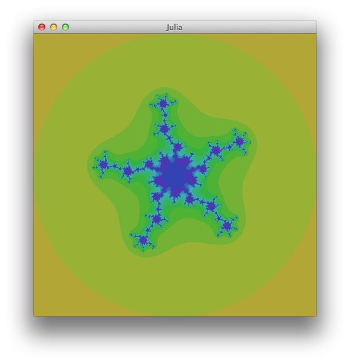
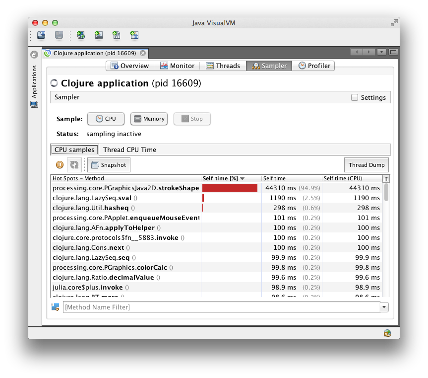

Matthew, Oct 28, 2013.
At work a friend of mine was talking about Julia Set and how he had learned about them from the book Chaos: Making a New Science. The maths is surprisingly simple and the results look great. Here's a bit about Julia Sets, implementing them in Clojure, and performance tuning the code to make it run real sweet.
How:
Functions are usually like f(z) = zn + c. Of course we have to put limits on how long we can wait for the value of z to diverge (I used ten iterations), and what we mean by "infinity" (I used the number 2, close enough right?). So, if a starting value of z had reached a magnitude of 4 within 10 iterations it was outside the Julia Set, otherwise it was inside. If a point is inside the set, we can record how many iterations the escape took. We make it all look pretty by plotting the number of iterations for each point, on the complex plane.
That bit of handwaving is all I'm going to say about the maths, but it's pretty much all I knew when I started out. Here's a few links that I found useful: [1 (with cool videos), 2 (graphs), 3 (mathsy, but excellent), 4 (wikipedia)]
Straight away we find that Clojure doesn't have a complex-number data type. It's dynamically typed though, and offers real nice literal collections so my first thought was to represent a complex number z = a + ib as a 2-element vector.
But, literally the top hit on a Google search for Clojure complex numbers is a StackOverflow post recommending a way using deftype, and including code for times and plus which I knew I'd need. So I used that from the outset:
As above, we're going to use f(z) = zn + c. In particular I'm going to set n=5 because I like the number 5 and it will give us a 5-arm fractal to look at. I will get the value of c (a complex number) by reading in the mouse pointer's position over the image of the set on the complex plane.
This is a function that returns a function. Call ifn passing c and n, and you'll get back a function that you can iteratively pass a single complex number z to.
In English, we need to: count the length of the sequence generated by iterating the function from above, stopping either when the value being iterated "escapes" by exceeding some threshold, or when we have iterated some maximum number of times. I wrote it in (what I consider to be) pretty idiomatic Clojure code using some of Clojure's excellent core functions.
I should explain that the mag2 function returns (the magnitude of the complex number) squared, to avoid taking a square root. So max_its is 10, escape is 22 = 4, z_n is the point on the plane we're considering, and itfn is something we made using ifn above.
We now have everything we need, for the maths at least. How are we going to show our fractal to our eyes?
Enter Quil, an excellent library for drawing and animation in Clojure, built on top of Processing. Quil asks 3 things of us:
Really, it's only the draw function that's worth going into here, with a couple of helper functions:
So, we let a few things, including c which we get from the mouse pointer's position. Then we use doseq in exactly the same way as a nested for-loop. For each (x,y) pair we get the relevant iteration-fn, then iterate it. Once we have the number of iterations that point took to escape, we can use Quil fns stroke and point to draw the dot in the right colour. Immediately we get radiant and beautiful Julia Sets, all the more awesome because we made them ourselves! Isn't programming brilliant?!
But, seriously, y u so slow. Oh god. I mean, the window's ony 480x480 pixels, but it takes 2.5 seconds to draw a single frame?
Now this is an interesting bit. I'd been looking for an opportunity to try some of the JVM profiling tools that I know from Java programming on some Clojure code. Maybe before we start you should have a guess about what the hotspots are. I did and I was wrong, but I've learned not to rely on intuition for performance analysis. We've got VisualVM after all...
Since JDK1.6_07 (ie quite a long time ago) the Sun/Oracle JVMs have included a load of really helpful tools, of which VisualVM is the king for performance analysis. Fire it up and it starts off by finding all the JVMs you're running (including itself):
With little icons and stuff it looks pretty neat. But why are there 4 Clojure VMs? Well, they are:
Have a poke around by all means, the Monitor tab is useful for spotting memory use and garbage collection. Sampler and Profiler might be a bit confusing at first as they seem to do the same thing. Profiler will alter (aka instrument) the running code to collect performance data (ie how much time each function call takes), and Sampler will collect the same data by repeatedly taking thread-dumps and reading through them. Sampler is faster, and less likely to cause problems in a complex app but possibly (supposedly, maybe) less accurate. I always use "Sampler". Hit the "CPU" button and leave it for a while to gather data. Then "Stop" and see what we've got:
That's pretty clear then. Read through the "Method" column, and there's a few kinds of things:
I was immediately struck by how easy it is to identify which Clojure functions are showing up and where they are in my code. Maybe this isn't surprising to you but I didn't know what to expect and was pleasantly surprised.
I decided to look at my own code first and deal with the massive block of time in strokeShape later on, because I wanted to change something and see the effect immediately rather than spend time reading the Quil docs to start with. A few easy things to fix:
Creates a clojure.lang.Ratio then converts it to a double, as x and w are both integers. Avoid this by making x a double first:
There's a few calls involving clojure.lang.LazySeq, which are mainly caused by my "idiomatic" do-iterations function. I gave it a better name and rewrote it without laziness as:
Another source of lazy seqs was using reduce to call times repeatedly. As the number of elements in the reduction is always 5, I could rewrite the code to directly calculate the fifth power:
This was as fast as I could get the code to run without looking at how I was using Quil. Turning off anti-aliasing sped things up (a lot), my fractal generator was now runing at 3fps. Remember that without VisualVM I would have no idea where the bottlenecks were but now I could easily see that >99% of time was spent in processing code, setting stroke colour and painting pixels. So I spent a while with the Quil and Processing documentation.
The final fix was to use Clojure's aset-int to write colour values directly to the Processing video buffer rather than going through the higher-level API of stroke and point. The exact code isn't relevant here but you can get it from the repo linked below. Now the app runs at 20-25fps, an increase of about 50x from the first cut and pleasantly interactive. I'm pleased with that.
What did I learn? No so much about writing fast Clojure, but that's not the point. Performance tuning is about finding the bottlenecks and elimintaing them, in which pursuit changing how I used Quil was used was about 20x more useful than writing faster Clojure. Know the tools and use them appropriately rather than guessing. Have fun writing Clojure and try VisualVM sometime. Download the code and gawp at the pretty pictures. Fractals are cool. By all means give Quil a try! Thanks for reading.